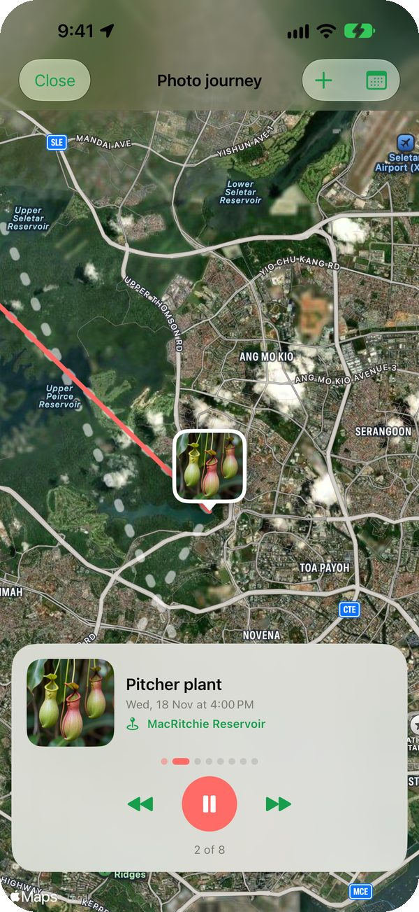
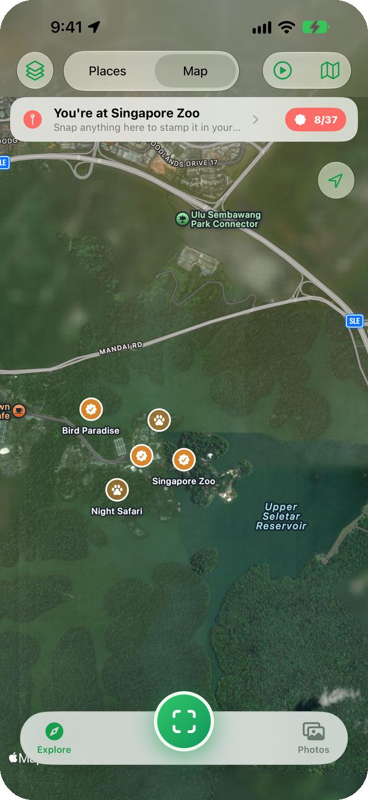
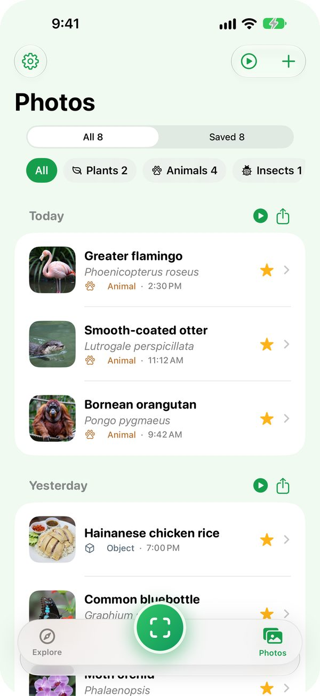
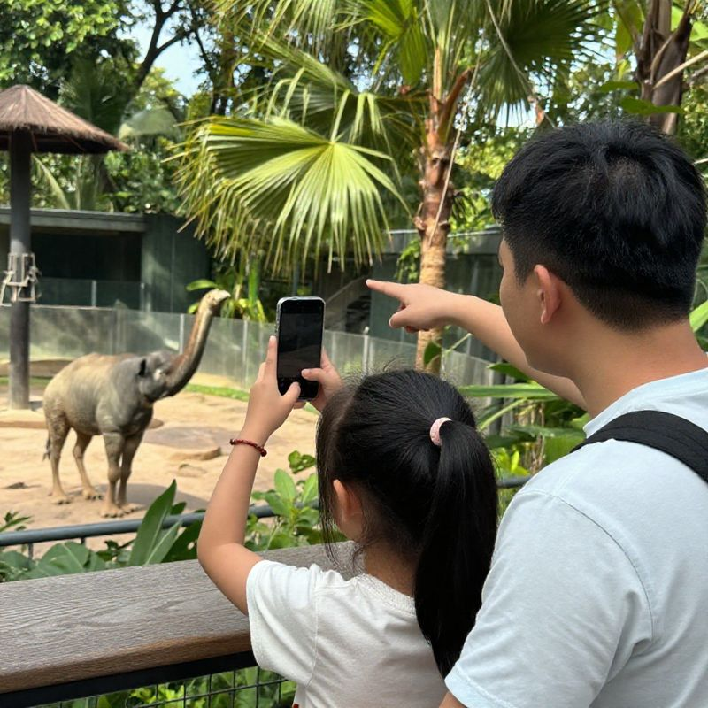
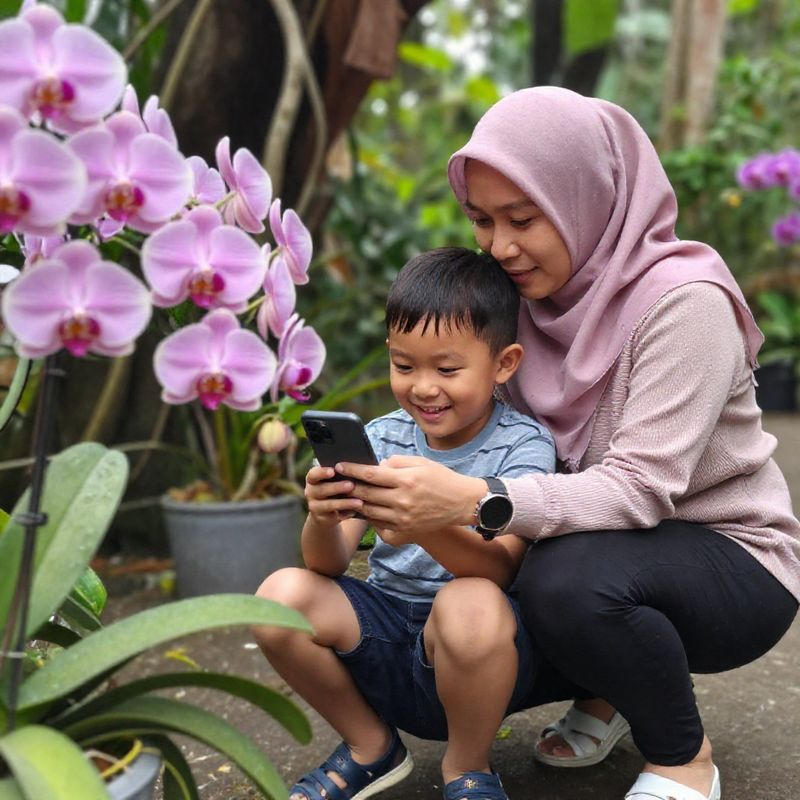

Zoo, gardens & nature in Singapore
Point your iPhone at an animal, a flower or a bug and GoSG Explore tells you what it is. Visit any of 37 places across Singapore and fill your family passport with stamps.
A day out, made into a game
Identify
Animals, birds, plants, insects and even hawker food. Get the name, a few fun facts and what to look for, in seconds. Then ask follow-up questions about any find.
Passport
Every find at one of 37 places earns that place's stamp. Earn badges for groups of places, like all the wildlife parks or every island.
Photo journeys Now with music
Your photos fly across the map in the order you took them, with an original soundtrack. Add photos from your library and they land where they were taken.

Map
Every stamp place on one map, with your own finds pinned where you made them. Know before you go with tips and links for each place.

Photos
Finds are grouped by day, by place and by kind, so you can find the otter from last Saturday in a second. Save your favourites with a star.

Family circle
Start a private family circle and share the code. Up to 12 people join with just a nickname and an animal: no names, emails or phone numbers. Share a find in one tap, react to each other's, and watch the family passport fill up with everyone's stamps. Only a place name is shared, never where exactly you were.


Privacy
No ads and no tracking. Photos stay on your iPhone and your own iCloud. To identify something, only that one photo is sent to our server, which asks a third-party AI service and doesn't keep it.
Android · beta
Snap and identify, collect stamps at 37 places, sort your photos and replay your day with music, on Android. It's free, and anyone can join the test in three taps.
Join the tester groupThen join the test →
Your Play Store account has to be set to Singapore. Questions: bestappsclub@gmail.com
Yes, it's free to start: everyone gets free identifications every day, plus stamps, the map, photos, journeys and the family circle. An optional Pro subscription in the app adds more identifications.
37 places across Singapore, from Singapore Zoo, Bird Paradise and the Botanic Gardens to nature reserves, parks, islands and neighbourhoods.
Your photos stay on your iPhone (and your own iCloud, if you turn on sync). To identify something, only that one photo is sent to our server, which asks a third-party AI service and doesn't keep it.
Start a family and share the invite code. Up to 12 people join with a nickname and an animal, no names, emails or phone numbers. Finds you share show up for the family, and the family passport collects everyone's stamps. Only a place name is shared, never an exact location.
No app is. Never eat a wild plant or mushroom based on an app, and keep a safe distance from wildlife.
Yes, in testing on Google Play. Join the tester group, then join the test and install from Google Play.
Email bestappsclub@gmail.com or see the support page.